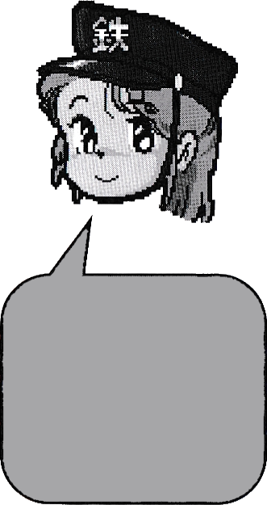

How to Play
1) First, choose a dealer. The dealer shuffles the cards and deals 4 face down cards to each player. The
remaining cards are placed face down to form the deck. The area next to the deck is the discard pile where
cards will be placed face up.
Opponent's Area
Discard Pile
Deck
My Area

You always have 4 cards in your hand. If you play one, then draw a replacement.